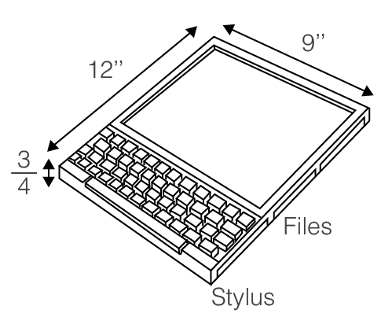
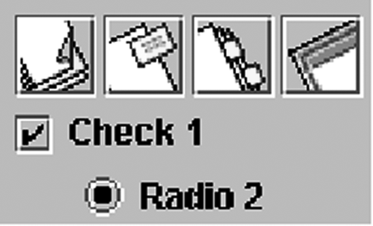
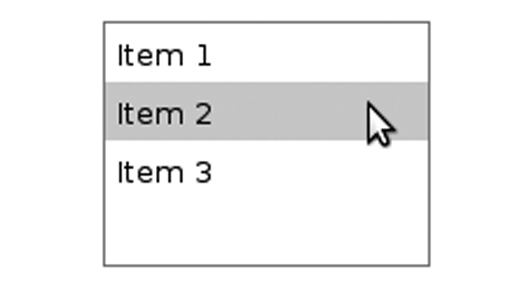
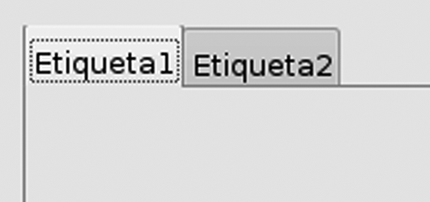
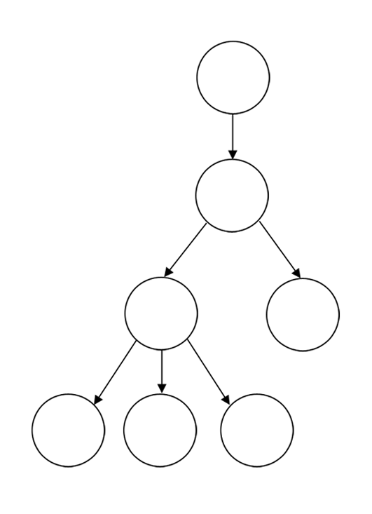
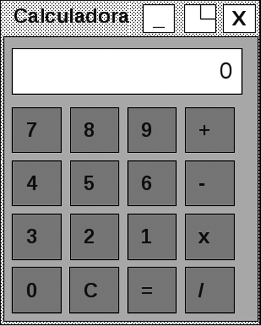
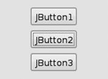
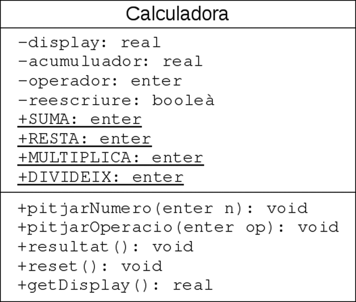
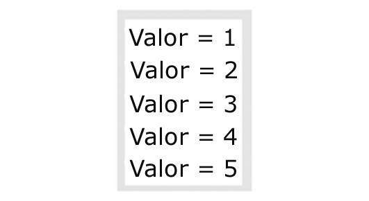

Interfícies gràfiques d'usuari
A mesura que els ordinadors i els sistemes operatius han evolucionat, una gran part de les aplicacions desenvolupades han passat d’estar orientades a la línia d’ordres, mostrant la informació en format exclusivament textual, a estar basades en un entorn totalment gràfic, molt més amigable per a l’usuari. Actualment, poques aplicacions no es basen en el que col·loquialment s’anomena una GUI (graphical user interface, interface gràfica d’usuari).
La immensa majoria de sistemes operatius moderns es basen principalment en una GUI per interactuar amb l’usuari.
Una GUI és un tipus d’interface en què els mecanismes que utilitza l’usuari per donar ordres al programa o visualitzar qualsevol informació es basa en la manipulació d’icones en lloc de l’entrada d’ordres textuals.
- 
- Imatge del Dynabook esbossada per Alan Kay
Cal remuntar-se fins als anys seixanta per trobar les primeres petjades de les GUI, basades en el treball dels investigadors de l’empresa Xerox. Ja al final dels anys seixanta i al principi dels setanta, Alan Kay, investigador de la Universitat de Utah, va considerar que la metodologia de l’orientació a objectes era especialment indicada per al disseny d’entorns gràfics. Una GUI és un exemple evident d’elements clarament identificables, amb unes propietats i un comportament, que interactuen per dur a terme una tasca concreta. Les seves idees van ser aprofitades pels investigadors de Xerox per crear un ordinador amb entorn totalment gràfic, el Dynabook. Conjuntament, aquesta feina també va desembocar en un fet important com el naixement de l’SmallTalk, un dels primers llenguatges orientats a objectes. Així, doncs, ja es pot veure que l’orientació a objectes i la generació de GUI són aspectes molt íntimament lligats.
Apple i les GUI
Un mite molt popular és que l’empresa Apple va ser la primera a desenvolupar GUI. En realitat, es va inspirar en les innovacions anteriors de Xerox.
Avançant fins als anys noranta, sorgeix un nou llenguatge que també aprofita els postulats d’Alan Kay: el llenguatge Java. En els seus orígens, aquest llenguatge estava especialment orientat a poder incloure en pàgines web elements gràfics dinàmics, en forma de petits programes que s’executaven en el navegador: els applets. No és casual que el desenvolupador de la primera versió de la biblioteca gràfica fos Netscape Communications, la companyia responsable del navegador principal del moment. Amb les millores successives i l’augment de la potència dels ordinadors, les aplicacions desenvolupades en Java finalment van fer el salt des del navegador a l’escriptori. Per aquest motiu, un dels punts en què el Java ofereix una biblioteca més completa i amb força feina al darrere és per a la generació d’entorns gràfics.
Aquest nucli d’activitat se centra totalment en la generació d’entorns gràfics mitjançant el Java. Per assolir aquesta fita, no solament és necessari entendre quines són les classes relacionades amb elements gràfics, sinó que també cal entendre com es vinculen a les classes especificades en l’etapa de disseny: la lògica interna del programa.
El paquet Java Swing
El conjunt de classes vinculades a l’entorn gràfic del Java pertanyen a la jerarquia de paquets javax.swing. Familiarment, es coneixen com la biblioteca Java Swing o, simplement, Swing. Aquestes són una extensió d’una biblioteca més antiga anomenada AWT (Abstract Windows Toolkit, joc d’eines abstracte de finestres).
Naixement del Java
Cal dir que quan sorgeix el Java, els navegadors més populars avui dia encara estan fent els primers passos. De fet, Internet Explorer no apareix fins al 1995.
La biblioteca original AWT sorgeix l’any 1995 com una primera aproximació a un mecanisme de generació d’entorns gràfics que sigui totalment abstracte, amb un estil homogeni independentment de l’arquitectura sobre la qual s’executi l’aplicació. Aquesta era una tasca molt complicada, ja que cada sistema operatiu disposa del seu propi aspecte (look and feel) i primitives per a la gestió d’elements gràfics, normalment molt diferents entre si. En darrera instància, es pot considerar que AWT va assolir la seva fita: mitjançant el seu ús és possible generar interfaces molt lletges de manera homogènia, independentment de l’arquitectura. Aquest resultat pot ser comprensible si es té en compte que van ser desenvolupades a corre cuita en un sol mes.
Afortunadament, tot i aquest mal pas, molts dels principis ideats per AWT, fora de l’àmbit purament estètic, van servir per generar una nova versió millorada visualment: la biblioteca Swing. Alguns exemples de les solucions que va aportar AWT, i van ser reusats per Swing, són quina estratègia cal usar per vincular la lògica interna del programa a la interface gràfica, o com es poden organitzar els elements gràfics dins una finestra. A l’actualitat, pràcticament cap aplicació usa AWT com a biblioteca gràfica, sempre s’utilitza la biblioteca Swing. Tot i així, AWT sempre està present en el rerefons de qualsevol aplicació basada en Swing.
Jerarquia de classes Swing
La biblioteca Swing pren la forma d’una jerarquia de classes de mida considerable. Cadascuna de les classes que en formen part representa un element típic d’un entorn gràfic: finestres, botons, formularis, menús, etc. Si es vol incloure algun d’aquests elements en la interface de l’aplicació, caldrà instanciar la classe pertinent.
Una jerarquia de classes és la manera com es classifiquen diferents classes amb relacions d’herència entre elles.
Tot i cada element que compon un entorn gràfic és un objecte. Hi haurà tants objectes com elements es vulguin incloure.
Una part petita però prou aclaridora de la jerarquia de classes Swing es presenta en la figura. Per millorar la llegibilitat de l’esquema, s’ha simplificat el format de les classes.

Qualsevol element gràfic dins la interface gràfica s’anomena un component, ja que tots són un objecte java.awt.Component.
Les classes amb noms que comencen per J en la figura són les incloses a Swing, mentre que la resta pertanyen a AWT o a la biblioteca estàndard del Java. Com es pot veure, una part de la biblioteca original AWT continua present dins Swing en forma de les superclasses java.awt.Component i java.awt.Container (entre d’altres), ja que Swing és una extensió d’aquesta. Aquestes dues classes especifiquen tots els aspectes genèrics del comportament dels elements d’un entorn gràfic. Per fer-ho, defineixen mètodes que les subclasses poden sobreescriue d’acord amb les seves particularitats. Això permet al motor gràfic del Java garantir que cada component sempre té implementat tot el conjunt de mètodes necessaris per visualitzar-los correctament i cridar-los polimòrficament.
Per tenir la llista completa de les classes i tots els seus mètodes cal consultar la documentació del Java.
- 
- JCheckBox i JRadioButton
Específicament, la classe abstracta java.awt.Component defineix totes les característiques referents a l’aspecte d’un element gràfic, com la mida, la font del text que conté, si està habilitat o la ubicació en pantalla, com també tot el conjunt d’interaccions que l’element pot rebre (ser pitjat, seleccionat, posar el punter del ratolí a sobre, etc.). En canvi, la classe java.awt.Container especifica tot el comportament relatiu a la capacitat d’un element gràfic de contenir-ne d’altres.
-

- Exemple de JLabel, JTextField i JTextArea
En la jerarquia completa de Swing hi ha una gran quantitat de components en forma de subclasses de JComponent, moltes més de les representades en la figura. Les classes més significatives, tot i que la llista no és ni molt menys completa, són les següents:
- 
- Exemple de JList
- JButton: Correspon al botó típic que es pot pitjar per donar ordres a l’aplicació.
- JToggleButton: Es tracta d’un botó especial amb ressort, que alterna entre un estat de pitjat o no. Cada cop que es pitja canvia d’estat.
- JCheckBox i JRadioButton: Representen un selector d’opció amb un text associat. En el primer cas, de forma quadrada tipus checked/ unchecked(marcat/no marcat), i en el segon de forma rodona. En el fons, és un cas especial d’un botó amb ressort, però amb una representació gràfica diferent. Són útils per fer apartats de configuració o formularis tipus test. La figura mostra un exemple de visualització d’un JButton amb icones gràfiques, un JCheckBox i un JRadioButton (de dalt a baix). Noteu la diferència en l’aspecte dels dos darrers.
- JLabel: Correspon a una etiqueta en què es pot mostrar text o una imatge.
- JTextField: Correspon a un camp de text, en què l’usuari pot escriure. Només es pot escriure una única línia. No permet variar l’estil dins del text (mida o tipus de la font).
- JTextArea: Component similar a l’anterior, per en aquest cas especifica una àrea de text en què és possible escriure lliurement, sense limitació a una única línia. La figura mostra un exemple de JLabel (dalt a l’esquerra), JTextField (dalt a la dreta) i JTextArea (a baix). Mentre que en la primera no es pot escriure, a la resta si que es pot.
- JTextPane: Component de funcionalitat pràcticament idèntica a l’àrea de text, però amb la capacitat afegida de poder editar text amb estil diferent (cursiva, negreta, etc.).
- JList: Una llista d’elements o ítems, normalment cadenes de text, d’entre les quals es pot seleccionar un conjunt. La figura mostra un exemple d’una JList, una llista d’elements amb opció de selecció múltiple. En aquest cas, es troba seleccionat l’element anomenat “item 2”.
- JFrame: La finestra principal de la interface gràfica en una aplicació d’escriptori.
- JApplet: La finestra principal de la interface gràfica en una aplicació incrustada en una pàgina web, un applet.
- JDialog: És un quadre d’alerta o de diàleg amb l’usuari.
- JPanel: Representa una àrea específica de la finestra, amb unes propietats concretes diferenciades: color de fons, vora, etc.
- JScrollPane: Idèntic a l’anterior, però si en algun moment la mida de la finestra és massa petita per visualitzar tot el contingut d’aquesta àrea, apareix una barra de desplaçament (scroll).
- JTabbedPane: Un conjunt de panells accessible mitjançant etiquetes (tabs) amb una cadena de text, de manera semblant a fitxes de biblioteca. Cada panell està associat a una etiqueta, de manera que quan es pitja, només es visualitza aquest panell.
Agregació de components
Tot i que no es mostra representat explícitament dins la jerarquia de classes de Swing, ja que totes les seves classes hereten tant de java.awt.Component com de java.awt.Container, es considera que hi ha dos tipus de components. Per una banda, els controls Swing, que són aquells components amb els quals l’usuari interactua directament: botons, opcions de menú, quadres de text, etc.
Exemples de controls Swing poden ser JButton, JToggleButton, JCheckBox, JRadioButton, JLabel, JList, JTextField, JTextArea, JTextPane.
D’altra banda, els contenidors Swing, que són aquells components que no tenen una funció directa d’interacció amb l’usuari, que serveixen exclusivament per encabir i organitzar a dintre qualsevol component, tant controls com altres contenidors. Aquests normalment corresponen a components com finestres, panells o barres de menú. Si bé és possible interactuar-hi (per exemple, redimensionar una finestra o obrir un menú), els resultats de l’acció solen quedar dins l’àmbit de l’entorn gràfic, i no se solen usar per donar ordres a la lògica interna del programa.
- 
- Exemple de JTabbedPane
Exemples de contenidors poden ser JFrame, JDialog, JApplet, JPanel, JScrollPane, JTabbedPane.
La figura mostra un exemple de JTabbedPane, un contenidor. Aquest és capaç d’encabir diferents elements gràfics, ordenats segons diferents etiquetes. En aquest cas, hi ha dues etiquetes anomenades “Etiqueta 1” i “Etiqueta 2” la visualització de les quals es pot anar alternant mitjançant la selecció del nom. En la imatge es visualitza “Etiqueta 1”.
- 
- Un arbre N-ari és un arbre en què cada node pare pot tenir qualsevol nombre de successors. Els nodes sense successors s'anomenen "fulles".
La relació entre aquests dos tipus de components dins de qualsevol interface gràfica és la següent. Dins un contenidor poden haver tant components com d’altres contenidors. En canvi, un component no pot contindre res, és un element final a l’estructura de la interfície Swing. Per tant, aquesta estructura sempre pren la forma d’un arbre N-ari. Els objectes ubicats en les fulles corresponen normalment a controls Swing, mentre que la resta són contenidors. Quan un contenidor A conté un altre component qualsevol B, es diu que A és el contenidor pare de B.
Per incloure qualsevol component dins un contenidor, cal cridar el mètode, add(Component comp) sobre el contenidor, passant com a paràmetre el component a afegir-hi. Aquest es troba definit en la classe java.awt.Container i totes les classes de la biblioteca Swing l’hereten.
Addicionalment, hi ha un subtipus especial de contenidors Swing, els anomenats contenidors d’alt nivell (top-level containers). Aquests es consideren els contenidors principals de la interface d’usuari, de manera que l’objecte arrel de l’arbre que conforma el mapa d’objectes de la interfície gràfica sempre és un contenidor d’aquest subtipus. Swing en defineix tres, tots subclasses de java.awt.Window: JFrame, JApplet i JDialog.
En el cas dels contenidors d’alt nivell, no és possible afegir-hi directament components cridant el mètode add. Només és possible la interacció mitjançant el seu panell de contingut (content pane), que es pot obtenir amb el mètode getContentPane(). Aquest ja és un contenidor normal sobre el qual sí que es pot cridar el mètode add.
La figura mostra un exemple de com es representaria una interface gràfica concreta en forma de mapa d’objectes i la seva classificació per tipus.

Cal instanciar les diferents classes associades a cada component del panell de contingut i afegir cada control obtingut en els contenidors corresponents, de manera que al final tots estiguin vinculats a un contenidor d’alt nivell: la finestra principal, instància de JFrame. Un fragment prou significatiu del codi necessari per generar el panell de contingut és el següent:
El mètode setHorizontalAlignment assigna el tipus de justificació del text. La classe defineix un conjunt de constants estàtiques per cada tipus de justificació.
El mètode setVisible fa visible el component. Fins que no es crida, tot i estar creat, és invisible per a l’usuari.
La barra de menús
Un tret característic força típic de les aplicacions d’escriptori és la utilització de menús en la franja superior de la finestra principal, amb l’objectiu de donar accés a moltes opcions sense atapeir la pantalla. Els components principals vinculats als menús dins la biblioteca Swing són els següents:
- JMenuBar: Contenidor que representa la barra de menús. Només n’hi pot haver un per finestra (JFrame).
- JMenu: Contenidor que representa un menú individual d’entre els diferents que es poden incloure dins la barra de menús. L’usuari visualitza el seu nom i es desplega en pitjar amb el ratolí. Es poden incloure menús dins d’altres menús, que es despleguen consecutivament.
- JMenuItem: Control associat a una opció individual de menú, que l’usuari selecciona.
- JCheckBoxMenuItem: Control que combina el JMenuItem i elJCheckBox.
- JRadioButtonMenuItem: Control que combina el JMenuItem i elJRadioButtonMenu.
La figura mostra un exemple amb tots els components possibles d’una barra de menús. No es pot afegir cap altre tipus de component o contenidor dins un menú.

Els menús també usen el mètode add per afegir components als contenidors. Es visualitzaran dins el menú exactament en el mateix ordre en què s’han afegit. L’única excepció sobre el mecanisme general és assignar l’única barra de menús a la finestra principal, que es fa cridant el mètode següent:
A continuació es presenta un fragment del codi que generaria una barra de menús com la que s’ha mostrat en la figura, centrant-se en el menú View. Analitzeu detingudament com s’afegeixen els elements del menú mitjançant crides successives del mètode add.
El mètode addSeparator permet afegir línies de separació entre els elements d’un menú.
El mètode setSelected serveix per marcar com a seleccionat o deseleccionat un control tipus o .
El mètode setMnemonic serveix per establir una drecera de teclat per a un control donat. La classe defineix constants per a totes les tecles.
El mètode setEnabled habilita o deshabilita un control.
Layouts
Un dels objectius més importants de la biblioteca d’entorn gràfic del Java és poder generar aplicacions amb un comportament homogeni independentment de la plataforma en què s’executin. Aquesta fita té molt sentit si es recorda que el Java es va pensar inicialment per al desenvolupament d’aplicacions executades en un navegador, els applets. En un entorn heterogeni com és Internet, és impossible establir per endavant els paràmetres sota els quals s’executa el navegador: maquinari, sistema operatiu, resolució de la pantalla, dimensions de la finestra del navegador, etc. Per tant, no es pot generar un entorn gràfic en què els components s’ubiquin d’una manera preestablerta i tinguin una mida fixa, suposant unes dimensions concretes de la finestra principal.
El mètode usat per afegir controls a un contenidor, add (Component comp), i les seves sobrecàrregues no disposen de cap paràmetre vinculat a les coordenades en què es pugui ubicar el component, només s’indica el component que s’ha d’afegir. El motiu és el mecanisme que el Java aporta per solucionar la circumstància que és impossible establir per endavant els paràmetres sota els quals s’executa el navegador. En una aplicació Swing (o AWT), en realitat, no és possible establir la ubicació i mides exactes de cada component dins la interface gràfica. El que es fa és, per a cada contenidor Swing (principalment, els JPanel i JFrame), especificar una política d’ubicació de components, de manera que el motor gràfic del Java escull automàticament la millor opció d’acord amb les dimensions reals de la finestra principal. Cada cop que la finestra principal canvia de dimensions, els components es reubiquen i redimensionen dinàmicament. Aquestes polítiques no les ha de generar el desenvolupador -el Swing ja defineix un conjunt predeterminat disponible-, entre les quals tan sols cal triar-ne una per a cada contenidor en la interface. Cada una és el que s’anomena un layout.
Un layout és una política d’ubicació i dimensionament de components, de manera que el motor gràfic del Java escull automàticament on s’ha de visualitzar i quina ha de ser la seva mida.
Concretament, els layouts disponibles a Swing són totes les classes que implementen la interface java.awt.LayoutManager.
El mètode que assigna un layout a un contenidor és setLayout (LayoutManager manager).
setPreferredSize
Aquest mètode permet suggerir quina mida es vol que tingui un component. Tot i així, no hi ha cap garantia que el layout l’obeeixi sempre.
Sota el sistema de layouts, tots els components tenen com a mida per defecte la mínima necessària per encabir tot el contingut. En principi, les seves dimensions no es poden establir de manera estàtica.
Malauradament, els layouts són un de tants casos d’idees que sonen molt més bé del que realment funcionen a l’hora de la veritat. En la immensa majoria dels casos, el motor gràfic del Java mai tindrà el mateix concepte de “millor ubicació i mida” que la que té al cap el desenvolupador. En conseqüència, l’ús de layouts sense l’ajut d’un IDE que proporcioni un editor d’interfícies gràfiques és una tasca complicada i que normalment necessita la inversió de força temps i esforç. Tot i així, si es vol veure el costat positiu de tot plegat, alguns dels defensors incondicionals del Java consideren que això no és necessàriament dolent, ja que força el desenvolupador a cenyir-se a entorns gràfics senzills, no gaire recarregats i, per tant, més usables. Fer una interfaces massa complexa es pot arribar a convertir en un exercici de paciència si no s’és un desenvolupador experimentat en l’ús de layouts.
L’única excepció en aquesta característica són els contenidors vinculats a menús, que no usen layouts, ja que un menú mai no es redimensiona ni els seus components canvien d’ubicació. Sempre té el mateix aspecte al llarg de l’execució de l’aplicació.
Els layouts més significatius són FlowLayout, BorderLayout, GridLayout, BoxLayout, GridBayLayout i GroupLayout.
FlowLayout
El FlowLayout és el layout que hi ha per defecte en tots els contenidors si no se n’assigna cap altre mitjançant el mètode setLayout. S’anomena així perquè es considera que els elements “flueixen de manera natural” dins el contenidor. La política que defineix és que tots els components es mantenen en la seva mida per defecte i es van ubicant per línies, d’esquerra a dreta i de dalt a baix, centrats horitzontalment. Si en un moment donat un component no cap en la línia actual, s’ubica en la línia immediatament inferior. L’ordre en què s’afegeixen al contenidor és el mateix en què s’ha cridat el mètode add.
El seu constructor és public FlowLayout().
La figura mostra un exemple de com varia la ubicació dels components en cas de redimensionar el contenidor. En tots els casos, es considera que la seva mida és la mínima per encabir-ne el contingut (en aquest cas, el mateix text que apareix representat).

BorderLayout
En un component en què s’aplica el BorderLayout es defineixen cinc zones diferenciades: nord, sud, est, oest i centre, que corresponen als punts cardinals del contenidor. En cada zona només es pot ubicar un component, que l’ocupa totalment i mai no varia de posició. Els components de les zones nord i sud ocupen el màxim espai possible horitzontal i el mínim indispensable en vertical. Per a les zones est i oest es dóna el cas invers. La zona central és l’única que varia de mida quan es redimensiona el contenidor.
El seu constructor és public BorderLayout().
Aquest layout és una excepció respecte a la resta, ja que sobre un contenidor que l’usa es pot cridar una sobrecàrrega del mètode add en què es passa un paràmetre addicional que indica la zona en què es pot ubicar el component:
La classe BorderLayout defineix cinc constants que serveixen per indicar cada zona en el paràmetre constraints:
BorderLayout.NORTHBorderLayout.SOUTHBorderLayout.EASTBorderLayout.WESTBorderLayout.CENTER
La figura mostra un exemple de redimensionat d’un contenidor amb aquest layout. Fixeu-vos que els components a est i oest no varien de mida tot i que el contenidor augmenta d’amplada.

GridLayout
El GridLayout organitza el component com una matriu amb cel·les de mida idèntica. En cada cel·la només hi pot haver un component, que ocupa tot l’espai disponible independentment de quina en seria la mida per defecte. Els components s’ubiquen per files, d’esquerra a dreta en el ma-add teix ordre en què es crida el mètode add.
No es poden saltar cel·les en anar cridant add. Si es vol deixar una cel·la en blanc, n’hi ha prou d’afegir un panell buit.
El seu constructor és public GridLayout(int rows, int cols).
El paràmetre rows indica el nombre de files i cols el nombre de columnes. La figura mostra un exemple de redimensionat d’un GridLayout.

BoxLayout
El BoxLayout s’acostuma a aplicar sobre un contenidor específic, el Box, que ja porta incorporat aquest layout per defecte en ser instanciat i no es pot canviar. Els components que conté mantenen la mida per defecte i s’ubiquen en una sola línia horitzontal o vertical, centrada.
Les instàncies de la classe Box no es generen mitjançant un mètode constructor, en els seu lloc s’utilitza un dels dos mètodes estàtics definits en la mateixa classe Box. El mètode a usar depèn de si es volen alinear els components horitzontalment o verticalment:
La figura mostra un exemple de redimensionat d’un contenidor Box d’alineació vertical.

Una altra de les particularitats dels contenidors Box és la seva capacitat d’incloure, usant el mètode add, dos components especials que cap altre tipus de layout pot usar: les Struts i les Glues, verticals i horitzontals. Donada una instància de Box, només es poden afegir Glues o Struts de la seva mateixa alineació (vertical o horitzontal). Novament, aquests components s’instancien mitjançant mètodes estàtics definits en la classe Box:
Component Box.createVerticalGlue()Component Box.createVerticalStrut(int height)Component Box.createHorizontalGlue()Component Box.createHorizontalStrut(int width)
Les Struts són espais en blanc d’un nombre concret de píxels (indicat amb els paràmetres height o width). Independentment de les dimensions de la Box, aquest espai es manté sempre invariable. Les Glue són exactament el contrari al que podria donar a entendre la seva traducció, “cola”. Dos components separats per una Glue sempre s’ubiquen el més separat possible segons l’espai que hi ha. Es pot considerar que es comporta com una molla en expansió.
En la figura es mostra un exemple d’aplicació de Glues i Struts.

CardLayout
Aquest layout organitza els components com una pila de cartes, on tots estan ubicats però a cada moment només se’n pot visualitzar un, el qual ocupa el màxim espai possible. L’ordre amb què s’afegeixen a la pila és el mateix en què es crida el mètode add sobre el contenidor.
El seu constructor és public CardLayout().
El CardLayout se sol usar per sobreposar panells.
Per anar canviant entre els diferents components de la pila, la classe CardLayout disposa d’un seguit de mètodes. En tots el paràmetre es refereix al contenidor en què s’ha aplicat el layout:
public void first(Container parent): Salta al primer component afegit.public void last(Container parent): Salta al darrer component afegit.public void next(Container parent): Salta al component afegit a continuació del visualitzat actualment.public void previous(Container parent): Salta al component afegit tot just abans del visualitzat actualment.
La figura mostra com s’alternen els components d’un CardLayout.

GridBagLayout
El GridBagLayout és el més versàtil i complex de tots els layouts. Justament per la seva complexitat, ens limitarem a donar una idea general del seu funcionament, ja que una explicació detallada seria molt extensa.
Aquest layout és conceptualment similar al GridLayout, i divideix el contenidor en una matriu de cel·les. La particularitat és que en aquest cas les diferents files i columnes poden ser de mida desigual i els components inclosos poden ocupar diverses cel·les contigües, tant en diferents files com columnes. Els components sempre ocupen tot l’espai possible de les cel·les assignades.
El seu constructor és public GridBagLayout().
Totes les propietats especials de les cel·les es defineixen amb l’ajut de la classe auxiliar GridBagConstraints. Les crides al mètode add al contenidor que usa aquest layout contenen tant el component a afegir com una instància d’aquesta classe:
La classe GridBagConstraints té un conjunt de propietats amb les quals definim com s’ubica l’element afegit dins la graella i quantes caselles ocupa per cada eix. Algunes de les més significatives són:
- gridx, gridy. Especifica la fila i columna en l’extrem superior dret del component. La primera fila i columna de la graella són les posicions zero. Si no s’especifica, l’element s’ubicarà tot just desprès de l’afegit tot just abans.
- gridwidth, gridheight. Indica el nombre de cel·les horitzontals o verticals que ocupa el component. Per defecte és 1. Si s’usa la constantGridBagConstraints.REMAINDER, significa que es volen ocupar totes les files o columnes restants fins al final.
- ipadx, ipady. Especifica un farcit extra al voltant del component, internament, en píxels. Per tant, el component mai serà més petit que aquest valor. Per defecte és zero.
- insets.Similar al cas anterior, però el farcit és extern, per la qual cosa es crea un cert espai de separació entre aquest component i la resta que l’envolten. Per defecte és zero.
- anchor. Usat quan el component és més petit que la cel·la, de manera que indica a quin extrem d’aquesta s’ha d’ajustar. GridBagConstraints especifica un seguit de constants per a aquest valor:
CENTER(per defecte),PAGE_START,PAGE_END,LINE_START,LINE_END,FIRST_LINE_START,FIRST_LINE_END,LAST_LINE_END, iLAST_LINE_START.
Tot i que res no impedeix reusar objectes GridBagConstraints en crides successives del mètode add per als casos de components amb característiques idèntiques, és millor usar instàncies diferents per evitar confusions.
La figura mostra un exemple de redimensionat de GridBagLayout. Les línies de separació entre cel·les no es visualitzen en realitat, només apareixen en la figura per facilitar la comprensió del seu funcionament. El component 5 és un exemple de l’element més petit que les cel·les que ocupa, i per tant ha està afegit amb un anchor de LAST_LINE_END.

GroupLayout
Des de la versió 1.6, el Java incorpora el layout GroupLayout, molt orientat al desenvolupament automàtic d’interfaces gràfiques mitjançant eines auxiliars. Res no impedeix usar-lo manualment, tot i que, com el GridBagLayout, té un cert grau de complicació.
La filosofia d’aquest layout és desplegar els elements al llarg dels dos eixos de coordenades (vertical i horitzontal). Al llarg d’aquests eixos, els elements s’agrupen mitjançant grups jeràrquics, de manera que donat un grup, hi pot haver continguts, components, altres grups, o espais en blanc. L’addició de grups és el que permet fer una organització jeràrquica, mentre que els espais són espais en blanc, són separacions buides entre elements. Els grups estan representats per la classe GroupLayout.Group, en la qual hi ha un conjunt de mètodes que permeten afegir-hi elements:
addComponent (Component comp)addGroup(GroupLayout.Group group)addGap(int size)
Al mateix temps, hi ha dos tipus de grups: seqüencials i paral·lels. En el primer cas els elements s’ubiquen un darrera l’altre al llarg de l’eix de coordenades corresponent, mentre que en el segon cas s’ubiquen en paral·lel. De manera similar a les Box, hi ha una classe concreta per a cada subtipus: SequentialGroup i ParallelGroup. Per crear algun d’aquest grups cal cridar els mètodes definits en la classe GroupLayout:
GroupLayout.Group createSequentialGroup()GroupLayout.Group createParallelGroup()
La clau d’aquest layout està en el fet que almenys hi ha d’haver un grup associat a l’eix vertical i un altre a l’horitzontal, i tots els components han de pertànyer a dos grups, un de l’eix vertical i un de l’horitzontal. A partir del grup on estan associats, se’n pot calcular la ubicació.
La millor manera d’entendre com es fa aquest càlcul d’ubicació és mitjançant un exemple. La figura mostra un GroupLayout en què hi ha un únic grup paral·lel associat a l’eix vertical i un de seqüencial a l’eix horitzontal. Cada component visualitzat (1, 2 i 3) pertany a tots dos grups i s’ha afegit al grup en ordre de numeració incremental. Els espais entre elements en realitat no existirien, s’han posat en la imatge per fer-la més clara.

En contraposició, en la figura es mostra com s’ubicarien els components si els dos grups fossin seqüencials en els dos eixos. Els elements s’han afegit als grups igual que en el cas de la figura, però com es pot apreciar, en lloc d’ubicar-se paral·lelament en l’eix vertical avancen una posició perquè són un grup seqüencial.

Una de les particularitats més importants del GroupLayout és que permet crear composicions d’elements sense haver de dependre de subpanells auxiliars. Els grups ja fan aquest paper.
Creació d'interfícies complexes
A partir de l’estudi dels diferents layouts existents, es pot arribar a la conclusió que molts, per si mateixos, no són suficients per generar una interface gràfica d’una certa complexitat. Aquest fet és especialment evident en casos com el BorderLayout, en què en cada zona només hi pot haver un component i, per tant, només hi podria haver cinc components en tota la interface.
Això es deu al fet que, normalment, un entorn gràfic no es pot resoldre amb un únic layout, sinó que cal la combinació de diferents layouts usats en diversos panells dins la finestra principal, tal com mostra la figura. De fet, els layouts és el que dóna sentit a l’existència de la classe JPanel, un contenidor que defineix àrees dins la finestra principal.

El fet d’haver d’estudiar com es combinen diferents layouts per assolir el resultat desitjat és un dels factors que donen una certa complexitat al disseny d’una interface gràfica i el que fa recomanable l’ús d’un IDE.
A continuació es mostra un exemple de com es poden combinar diferents layouts per generar la calculadora que es mostra en la figura. Concretament, es combina un BorderLayout amb un GridLayout per aconseguir l’efecte final.
- 
- Calculadora creada combinant layouts.
El Netbeans i layouts absoluts
El Netbeans disposa d’un layout de posicionament absolut: la classe org.netbeans.lib.awtextra.AbsoluteLayout.
Afortunadament, a l’hora de generar interfaces amb composicions complexes, en què cal ubicar els components de manera molt especial, hi ha una alternativa molt útil: els layouts de posicionament absolut (o, simplement, layouts absoluts). Algunes biblioteques externes a les estàndard del Java proporcionen un tipus especial de layout que permet el posicionament absolut dels components. D’aquesta manera, es pot indicar la ubicació i mides exactes de cada component, que mai varia al llarg de l’execució de l’aplicació independentment que es redimensioni el contenidor.
setResizable
Aquest mètode serveix per habilitar/deshabilitar la capacitat de redimensionar una finestra. Evitant que es pugui redimensionar la finestra podem eludir el problema del redimensionat del layout absolut.
Si bé aquest tipus de layout pot estalviar molta feina, cal ser molt conscient de les implicacions del seu ús. Per una banda, al redimensionar el contenidor d’alt nivell, tot segueix igual, i per tant, tot el nou espai extra queda buit, tal com mostra la figura

D’altra banda, mai no s’ha d’oblidar que els layouts absoluts són aliens a les biblioteques estàndard del Java. Cal incloure’ls com a classes addicionals dins de les aplicacions que els usen en desplegar-les, o aquestes no funcionaran.
Connexió de la interfície a l'aplicació
Mitjançant la combinació d’objectes de les classes definides en la biblioteca Java Swing és possible generar finestres amb tots els components correctament ubicats i visualitzats, però qualsevol interacció per part de l’usuari no fa res. Per interconnectar la interface gràfica generada amb la lògica interna del programa, quan l’usuari dóna una ordre, aquesta es tradueix en una interacció directa amb els objectes que componen la lògica interna del programa, i en canvia l’estat.
Aquesta tasca d’interconnexió no és trivial si és vol fer la feina ben feta, ja que hi ha problemes que, si no es preveuen, tenen un impacte greu en l’escalabilitat de l’aplicació, i incrementen la possibilitat que qualsevol lleugera modificació impliqui canvis en moltes altres classes. El més important de tot és no respectar el principi d’encapsulació, barrejant el codi vinculat exclusivament a la gestió de la interface gràfica amb el de la lògica del programa. Si això succeeix, el disseny generat quedarà lligat per sempre a aquesta interface, i adaptar-lo a una altra implicarà modificacions. Les classes deixen de ser directament reusables. Per tant, l’objectiu principal és separar les classes vinculades a la interface amb les vinculades a la lògica interna, o estat, de l’aplicació.
Per lògica interna del programa s’entén les instàncies de les classes generades en el procés de disseny de l’aplicació.
El cas ideal d’interconnexió és aquell en què les classes del model estàtic UML, resultat del procés de disseny, es poden integrar dins de qualsevol interface, sigui quina en sigui l’aparença, sense haver de fer absolutament cap canvi sobre aquestes.
Perquè l’aplicació final sigui escalable i reusable, s’ha d’establir una estratègia que es pugui usar en qualsevol llenguatge de programació.
El patró Model-Vista-Controlador
Per a interconnectar la lògica interna de l’aplicació, generada en el procés de disseny en forma de diagrama UML, amb la interface d’usuari, una immensa majoria de llenguatges, incloent-hi el Java, es decanta pel patró de disseny anomenat Model-Vista-Controlador (MVC).
El patró MVC és aplicable a qualsevol aplicació que permet la interacció amb l’usuari. No és exclusiu d’aplicacions amb interfaces gràfiques.
Un patró de disseny és una estratègia a seguir per resoldre un problema determinat dins el procés de disseny del programari, de manera es pugui emprar en un ampli ventall de situacions. De totes maneres, sempre cal adaptar aquesta estratègia als detalls de cada cas concret.
En aquest cas, el problema que hi ha en el procés de disseny de programari que es vol resoldre és l’esmentat anteriorment: com es pot separar de manera efectiva la lògica interna del programa de la interface d’usuari, de manera que modificacions en una part impliquin canvis mínims en l’altra.
MVC i SmallTalk
El patró MVC té els orígens en el llenguatge SmallTalk, cosa que no és gens estranya si es té en compte que aquest llenguatge va ser dissenyat per fer la interface gràfica del Dynabook.
El patró MVC divideix les diferents classes de l’aplicació en tres conjunts diferenciats, segons el rol. Aquesta diferenciació és exclusivament conceptual i no s’ha de traduir en algun tipus de relació entre classes a nivell de diagrama UML (associació, herència, etc.).
Les classes del Model representen la lògica interna del programa i contenen l’estat de l’aplicació, i proporcionen totes les funcionalitats exclusives a l’aplicació, independents de la interface. Aquest grup està compost principalment per les classes que el dissenyador ha reflectit en el model estàtic UML.
-
 que forma part de la Vista del programa que la controla./5")
- La torre Agbar de Barcelona és un enorme panell de LED (Light Emitting Diodes, diodes emissors de llum) que forma part de la Vista del programa que la controla.
Les classes de la Vista representen l’aspecte purament vinculat a la interface d’usuari, gràfica o no. Aquestes s’encarreguen tant de capturar les interaccions de l’usuari com d’accedir a les dades emmagatzemades en el model, de manera que l’usuari les pugui visualitzar i manipular correctament. Per tant, una de les seves responsabilitats principals és mantenir la consistència entre les dades internes i el que visualitza l’usuari. Qualsevol classe usada per gestionar un element on visualitzar la informació o donar ordres a l’aplicació forma part d’aquest grup. Per exemple, la classe que gestiona una impressora o un panell de LED també es consideraria part de la Vista. Tots els components gràfics Swing de l’aplicació pertanyen exclusivament a aquest grup.
Les classes del Controlador representen la capa intermèdia entre dades i interface que s’encarrega de traduir cada interacció de l’usuari, capturada per la Vista, en crides a mètodes definits en el Model, de manera que s’executi la lògica interna adequada a l’ordre donada per l’usuari. En aquest grup hi haurà una classe per a cada funcionalitat que es vulgui incorporar a la interface.
Mitjançant les interaccions dels objectes de classes dels diferents conjunts es genera una aplicació que respon a les ordres de l’usuari. Atès que aquestes interaccions, en darrera instància, sempre es tradueixen en crides a mètodes, aquest patró de disseny estableix els mecanismes necessaris perquè un usuari pugui cridar mètodes sobre les instàncies de les classes del diagrama UML resultat del disseny de l’aplicació.
S’entén per fer doble clic pitjar un botó del ratolí dues vegades molt ràpidament.
L’esquema d’actuació dels elements del patró MVC és el següent:
- L’usuari actua sobre una instància d’una classe de la Vista, per exemple, un botó.
- L’objecte rep l’acció i la passa a una instància d’una classe del Controlador. En aquest procés es transmet tota la informació addicional necessària per al tractament correcte de l’acció. Per exemple, si s’ha fet amb el botó dret o esquerre del ratolí, o si s’ha fet doble clic.
- L’objecte Controlador crida els mètodes que pertoqui del Model per aconseguir el resultat associat a l’acció de l’usuari.
- L’estat dels objectes del Model canvia.
- El Model avisa la Vista que hi ha hagut canvis.
- Els objectes de la Vista que mostren la informació associada a l’estat del Model criden els mètodes de consulta necessaris per mostrar correctament el nou estat.
La figura mostra un resum de les interaccions entre els objectes dels tres conjunts. Les diferents interaccions normalment es divideixen entre les que es tradueixen en crides a mètodes en moments clarament identificables durant l’execució de l’aplicació, les crides síncrones, i les que no ho són, ja que poden sorgir en qualsevol moment, les crides asíncrones.

Entorns heterogenis
Alguns exemples típics són la portabilitat a dispositius mòbils o sistemes encastats (caixers automàtics, caixes enregistradores, etc.).
A part dels beneficis esmentats, tot seguit es mostren algunes altres aportacions d’usar el patró MVC. El preu a pagar per obtenir tots aquests beneficis és un cert increment en la complexitat de l’aplicació. Aquest, però, és un preu que val la pena pagar. Són:
- Més reusabilitat de les classes. La separació entre les classes del Model i la Vista permet implementar més fàcilment aplicacions en què hi ha diferents mecanismes per visualitzar la informació en paral·lel. Això també permet facilitar el test i el manteniment d’aquestes classes, ja que tot l’accés a l’estat de l’aplicació sempre es realitza per mitjà d’aquestes.
- Millor portabilitat en entorns heterogenis. L’adaptació de l’aplicació a nous sistemes amb diferents capacitats per visualitzar la informació només implica la implementació d’una nova Vista. El Model es pot mantenir íntegre sense que calgui cap modificació.
Tot i els passos enumerats, val la pena comentar que hi ha situacions en què és factible no obeir el model directament i fer que sigui el Controlador el que forci l’actualització de la Vista. Si bé aquesta no és una aproximació pura, no es perd cap dels avantatges descrits del patró MVC.
Control d'esdeveniments
Sempre s’executa el codi vinculat al motor gràfic que gestiona la visualització de la interfície.
Una de les particularitats de les aplicacions interactives és que, un cop es posen en marxa, aquestes es queden parcialment o totalment inactives a l’espera que l’usuari faci alguna acció. Fins que això no succeeix, no s’executa cap codi associat a les funcionalitats de l’aplicació. Aquesta circumstància es plasma dins el patró MVC amb les crides asíncrones, també anomenades esdeveniments, entre els objectes de la Vista i el Controlador. És per això que la biblioteca Java Swing implementa aquest patró mitjançant el mecanisme anomenat control d’esdeveniments. Els esdeveniments són generats pel motor gràfic del Java en resposta a accions de l’usuari. El programador no s’ha de preocupar de com es generen realment.
Les accions de l’usuari sobre components Swing generen esdeveniments. Aquests esdeveniments són associats a fragments de codi, que s’executen cada cop que tenen lloc.
Reflexionant una mica, el concepte d’esdeveniment asíncron amb un codi associat no és un aspecte totalment nou, ja que conceptualment no és gens diferent de l’usat en el Java per al control d’errors mitjançant excepcions.
Gestió de focus
Un control guanya el focus sempre que és usat. Normalment, el focus també es pot desplaçar entre controls amb la tecla de tabulador.
Swing defineix un conjunt de classes que representen cada tipus d’interacció, genèricament, que l’usuari pot realitzar sobre un component. Com en el cas de les excepcions, els esdeveniments són objectes, resultants de la instanciació d’alguna d’aquestes classes, que el programador pot manipular per obtenir informació més detallada respecte a les particularitats de l’acció que l’han generat. Totes elles pertanyen al paquet java.awt.event.
- 
- El control JButton2 té el focus en aquesta imatge.
Alguns dels tipus d’esdeveniments més típics són els següents:
- ActionEvent: Es genera en realitzar l’acció més típica, o estàndard, sobre un control. Cada control estableix quina considera que és la seva acció estàndard, que pot ser diferent per a cada cas. Per exemple, en el cas d’un botó, es genera en pitjar-lo.
- MouseEvent: Generat davant qualsevol acció vinculada exclusivament al ratolí. Per exemple, en pitjar qualsevol botó del ratolí, moure l’apuntador dins una àrea concreta, etc.
- KeyEvent: Associat a accions exclusivament relatives al teclat. Per exemple, pitjar una tecla o deixar-la anar.
- WindowEvent: Qualsevol esdeveniment relatiu a l’estat d’una finestra. Per exemple, minimitzar-la, maximitzar-la, redimensionar-la o tancar-la.
- FocusEvent: Aquest esdeveniment ve donat per accions vinculades al focus de controls. Amb focus es refereix al fet que un control queda remarcat dins la interface, de manera que s’hi pot interactuar directament mitjançant el teclat. Exemples d’aquest tipus d’esdeveniment són guanyar o perdre el focus.
- TextEvent: Generat en realitzar accions relatives a camps de text. Per exemple, modificar un camp de text.
No tots els components Swing poden generar absolutament tots els tipus d’esdeveniments, sinó que només generen els associats a interaccions que realment poden rebre. De fet, alguns estan molt vinculats a components molt específics: per exemple, en una aplicació d’escriptori, només els JFrame generen WindowEvent i només els JTextComponent generen TextEvent. Per veure amb detall quins esdeveniments llença cada component Swing davant cada tipus d’acció, és necessari mirar la documentació de Java.
La figura mostra un exemple d’esdeveniment: la classe MouseEvent. Com es pot veure, aquest disposa d’un conjunt de mètodes que permeten consultar-ne els detalls: quin botó s’ha pitjat, quantes pulsacions s’han fet, quines són les coordenades de la seva posició sobre la finestra principal, etc. Alguns d’aquest mètodes són específics d’un esdeveniment generat pel ratolí, i d’altres són aplicables a qualsevol, heretats de la superclasse AWTEvent.
El mètode getComponent retorna el component que ha generat l’esdeveniment.

Captura d'esdeveniments
La captura d’esdeveniments, de manera que es puguin tractar dins l’aplicació, es realitza mitjançant uns objectes especials anomenats Listeners. Aquests objectes conformen la part de Controlador del patró MVC plasmat en la biblioteca gràfica del Java.
Listeners
Hi ha un tipus de Listener diferent per cada tipus d’esdeveniment: objectes ActionListener, que capturen esdeveniments tipus ActionEvent, objectes MouseListener per capturar els MouseEvent, etc. Cada tipus de Listener només pot capturar el tipus d’esdeveniment al qual esta associat, i absolutament cap altre.
Nomenclatura dels Listeners
Donat un tipus d’esdeveniment “xxxEvent”, normalment, el seu “Listener” associat té el nom “xxxListener”. El mètode per assignar-lo a un component es diu “addxxxListener”.
Un Listener captura els esdeveniments que genera un únic component dins la interface gràfica. Perquè pugui acomplir aquesta tasca cal registrar-lo en el component. Si per un tipus concret d’esdeveniment el component no té cap Listener associat registrat, aquests s’ignoraran, independentment del fet que l’usuari pugui fer l’acció sobre el component. No passarà res a l’aplicació en fer-la. Per fer el registre, cada component disposa d’un mètode diferent per cada tipus d’esdeveniment que pot generar. Per exemple, els components que generen ActionEvent disposen d’un mètode addActionListener que permet registrar-hi un ActionListener. En contraposició, els components que no poden generar aquest tipus d’esdeveniment no disposen d’aquest mètode i, per tant, no poden tenir registrat cap ActionListener.
Els objectes Listener són els encarregats de capturar els diferents tipus d’esdeveniment, adoptant el rol de Controlador del patró MVC. Per poder fer-ho, cal que estiguin registrats en els components que generen els esdeveniments a capturar.
Cada component té la seva llista individualitzada d’objectes Listener, tants com tipus d’esdeveniment calgui capturar pel component. La figura mostra un esquema d’aquest mecanisme per dos botons diferents dins una interface gràfica. D’acord amb la seva llista de Listeners, cada botó respon de manera diferent davant els diferents esdeveniments que generen individualment. Val la pena remarcar que cada Listener que apareix en la figura és un objecte diferent.

La biblioteca gràfica del Java defineix dins de cada tipus de Listener un conjunt de mètodes, cadascun dels quals correspon a una interacció més concreta del que marca l’esdeveniment. Per exemple, la generació d’un MouseEvent per si mateixa només indica que ha passat alguna cosa amb el ratolí, però res més. El nombre d’aquests mètodes varia segons el tipus d’interaccions més especifiques que pot significar cada tipus d’esdeveniment.
La figura mostra els Listeners més usats d’entre els definits pel Java, amb tots els seus mètodes.

Quan un Listener captura un esdeveniment, immediatament crida el mètode corresponent a l’acció més concreta que ha dut a terme la generació de l’esdeveniment. Per exemple, si es genera un MouseEvent per la pulsació d’un botó del ratolí, el MouseListener, en capturar-lo, executarà immediatament el mètode mouseClicked. D’aquesta manera, és possible fitar quina acció concreta ha dut a terme l’usuari sobre el component que ha generat l’esdeveniment. El mateix esdeveniment es passa com a paràmetre en aquesta crida, de manera que és possible consultar-ne els detalls (quin botó s’ha pitjat, la seva posició, etc.). Tot aquest comportament es produeix automàticament, gestionat pel motor gràfic del Java.

Un cop s’ha entès com es porta a terme la captura d’esdeveniments i què passa quan es porta a terme, és el moment de veure la darrera peça que falta: com s’executa un tros codi concret quan un usuari realitza una acció sobre la interface gràfica Swing.
Interfaces Java són classes abstractes pures, sense cap mètode codificat a l’interior. S’hereta d’aquestes amb la paraula clau implements.
Dins la biblioteca gràfica del Java, tots els diferents tipus de Listener es troben definits com a interfaces Java. Concretament, tots hereten de la interface comú EventListener. Per tant, en realitat, no és possible instanciar directament un Listener a partir d’ells, ja que aquests només proporcionen la definició dels mètodes mostrats en la figura, però no contenen cap codi executable. Per poder instanciar un Listener d’un tipus concret, el desenvolupador ha de crear una classe pròpia que implementi la interface corresponent i, per tant, codificar mitjançant sobreescriptura tots i cadascun del mètodes definits en la interface. L’objecte Listener que realment es registra en un component és una instància d’aquesta classe creada pel desenvolupador.
És justament en aquest punt, en la implementació dels mètodes definits en la interface, que s’assigna el codi que es vol executar davant l’acció d’un usuari. Pel mecanisme de polimorfisme, quan el Listener, prèviament registrat en un component, capturi un esdeveniment i cridi el mètode corresponent a l’acció de l’usuari, el codi que s’executarà serà l’assignat a aquest mètode en la classe creada pel desenvolupador. Així, doncs, es pot veure com gràcies a l’ús de mètodes polimorfes ha estat possible crear la biblioteca gràfica del Java de manera que pugui ser adaptada a qualsevol aplicació.
El desenvolupador ha de generar una classe per cada Listener que vulgui usar dins l’aplicació. Cadascuna d’aquestes classes implementa la interface Listener associada al tipus d’esdeveniment a controlar. Les seves instàncies són les que realment es registren en els components.
Donats els rols dels elements del patró MVC, és justament dins els mètodes sobreescrits a aquests Listeners personalitzats des d’on cal fer les crides cap a objectes del Model. La figura mostra una visió general de tot el sistema, associant ja cada part implicada al patró MVC. Recordem que, pel mecanisme d’herència, un objecte Boto1ActionListener també és un ActionListener.
Una de les conclusions d’aquest mecanisme és que, atès que el codi associat a una mateixa acció en diferents components normalment també serà diferent, això implica que el desenvolupador ha de crear una classe pròpia Listener per cada tipus d’esdeveniment i cada component dins la interface gràfica. Per exemple, si hi ha tres botons i es vol assignar codi diferent a l’acció de pitjar cada un, caldrà definir tres classes diferents que implementin la interface ActionListener. A cada una s’assignarà el codi que correspongui, diferent dels altres, als mètodes actionPerformed respectius. Un cop fet, ja només resta crear una instància de cadascuna d’aquestes tres classes i assignar una a cada botó, d’acord amb el codi que es vol executar en pitjar cada un. La figura esquematitza aquest comportament.

Tot i que normalment es registra un objecte Listener diferent en cada component per cada tipus d’esdeveniment, res no impedeix reusar el mateix objecte per a un mateix tipus d’esdeveniment en diferents components. La condició per fer-ho és que el codi que cal executar en capturar l’esdeveniment sigui exactament el mateix per a tots els casos.
- 
- Esquema de la classe Calculadora.
Prenent l’exemple de la calculadora, a continuació es mostra un fragment de codi que serveix per il·lustrar aquest fet. Un dels aspectes que val la pena destacar de l’exemple és el fet que tots els Listeners es defineixen com a classes internes. Aquest és un fet molt habitual per dos motius. D’una banda, i el menys important, pel fet que els Listeners propis es poden considerar classes auxiliars de la interface gràfica. D’aquesta manera s’evita tenir una quantitat enorme de classes en fitxers .java separats. D’altra banda, i com a motiu principal, això permet que des del codi dels Listeners es pugui accedir directament als atributs de lainterface gràfica. Això és important, ja que no és possible cridar mètodes d’objectes del model sense tenir-hi una referència. En l’exemple, això es veu en la crida de mètode als objectes calculadora:Calculadora i display: JTextField.
Un exemple de reutilització d’un mateix objecte Listener en diferents components es mostra a continuació pels diferents botons numèrics. Si el mètode actionPerformed es codifica d’una manera adequada, en realitat tots els botons han de fer el mateix: cridar el mètode pitjarBoto sobre el model (l’objecte calculadora).
parseInt és mètode estàtic de la classe Integer que permet transformar una cadena de text en enter.
Adaptadors
Atès que els adaptadors són classes normals, s’hereta dels adaptadors usant la sentència “extends”.
Atès que els Listeners són interfaces, el desenvolupador està obligat a sobreescriure tots els seus mètodes sense cap excepció, o en cas contrari el compilador retornarà un error. Això vol dir que si per algun dels mètodes estesos definits no es vol realitzar realment cap acció, serà necessari deixar el mètode buit, sense codi. En els casos de Listeners amb diversos mètodes, per exemple, el WindowListener, això pot ser pesat i fer el codi més confús. Per aquest motiu, la biblioteca gràfica del Java defineix un conjunt de classes Listener no abstractes amb tots els mètodes ja sobreescrits, però de contingut buit: els adaptadors (adapters). Per tant, el desenvolupador també pot generar diferents tipus de Listener heretant-ne d’ells i només sobreescrivint els mètodes que realment vol usar.
Tots els adaptadors també estan definits en el paquet java.awt.event. Hi ha un adaptador per cada tipus de Listener amb més d’un mètode: FocusAdapter, WindowAdapter, KeyAdapter, etc. No hi ha adaptadors per a Listeners amb un únic mètode, com l’ActionListener o el TextListener, ja que en aquest sentit no aporten res.
Un error típic: el problema de les majúscules i minúscules
Un error típic del programador inexpert és, en decidir sobreescriure un mètode, equivocar-se en una majúscula o minúscula en el nom del mètode respecte a l’original de la superclasse. Atès que el Java és sensible a majúscula/minúscula (és case-sensitive), quan això passa, en realitat no s’ha sobreescrit el mètode, sinó que se n’ha generat un de nou amb un nom molt semblant. El compilador ho accepta i no retorna cap error. Atès que el mètode original es manté invariable, que en el cas dels adaptadors vol dir sense codi, l’aplicació no farà absolutament res en realitzar aquella acció, ja que en capturar l’esdeveniment es crida el mètode original buit.
El Listener següent no fa res quan el component en què s’ha registrat guanya el focus:
Classes anònimes
En la immensa majoria de casos, els Listeners que codifica el desenvolupador són classes relativament senzilles i curtes, amb pocs mètodes, i de les quals només s’usa una instància dins de tota l’aplicació, ja que cada Listener se sol registrar a un únic component. Atès aquest fet, és útil conèixer un mecanisme que ofereix el Java per definir classes auxiliars de manera encara més simple que les classes privades: les classes anònimes.
Una classe anònima no té nom. Es caracteritza perquè en lloc de definir-se com a entitat diferenciada amb una capçalera class, es defineix dins el codi just en el moment precís d’instanciar-la.
Les classes anònimes són un mecanisme del llenguatge Java que es pot usar per a qualsevol situació, però són especialment útils a l’hora de generar Listeners. Com les classes privades, les classes anònimes tenen accés directe a qualsevol atribut de la classe en què es defineixen.
Per usar-les, és prerequisit que la classe que es vol definir sigui subclasse d’una altra ja existent. La seva sintaxi és la següent:
Per exemple, els Listeners usats en exemples anteriors es poden definir de la manera següent, en lloc de mitjançant classes privades. Fixeu-vos com les classes són definides just en el moment d’instanciar-les (en fer un “new”), en lloc de fer-ho prèviament en un bloc a part. Els fragments de codi en què es defineixen classes anònimes es troben remarcats en negreta.
windowClosing
Perquè una aplicació realment acabi en tancar la finestra principal, cal registrar-hi un WindowListener i fer que el seu mètode finalitzi l’aplicació. Per exemple, cridant la crida System.exit(0).
Altres elements gràfics
La biblioteca gràfica Swing és molt extensa i ofereix un conjunt de funcionalitats que, si són conegudes pel desenvolupador, poden estalviar-li molta feina. Swing permet realitzar tasques habituals dins la generació d’una interface gràfica de manera flexible i amb poc esforç. Per veure com funcionen amb detall absolut les classes implicades és necessari consultar la documentació del Java, en què s’enumeren tots els seus mètodes i s’explica com cridar-los correctament.
Panells d'opcions
Un element molt usat en les interfaces gràfiques són els panells d’opcions, que serveixen per avisar l’usuari d’algun esdeveniment o demanar-li confirmació davant alguna acció. L’aplicació queda bloquejada fins que es respon en el panell d’opcions amb alguna de les opcions presentades: Sí/No, Acceptar/Cancel·lar, etc. La figura mostra un exemple de panell d’opcions.
L’idioma dels botons sempre està associat a la configuració d’idioma del sistema operatiu.

A Swing, per realitzar un panell d’opcions no és necessari crear una finestra i afegir tots els components un a un, ja hi ha una classe que els construeix automàticament i els mostra per pantalla: la classe JoptionPane.
La classe JOptionPane presenta una particularitat important respecte a tota la resta de mecanismes emprats a Swing, una gran part dels seus mètodes són estàtics. Cada un està vinculat a la generació d’un tipus de panell d’opcions diferent. Així, doncs, en contraposició amb tots els altres components, els panells d’opcions no se solen generar mitjançant la instanciació d’una classe. Només s’usen constructors per generar panells personalitzats.
Component pare
Un paràmetre que apareix en tots els casos és el component pare del panell d’opcions, normalment, el contenidor d’alt nivell corresponent.
Existeixen quatre blocs de mètodes estàtics, tots amb diferents sobrecàrregues, que permeten generar diferents tipus de panells d’opcions:
- showConfirmDialog. Mostra un panell de confirmació, en què es poden establir diferents possibilitats de resposta: Sí/No, Sí/No/Cancel·lar, Acceptar/Cancel·lar.
- showInputDialog. Mostra un panell en què l’usuari pot introduir una única línia de text.
- showMessageDialog. Mostra un missatge a l’usuari, que només pot acceptar.
- showOptionDialog. Permet mostrar qualsevol tipus de panell. La llista de paràmetres permet personalitzar-ne totes les propietats.
Tots els mètodes retornen el valor corresponent a la resposta donada per l’usuari. La classe JOptionPane defineix un conjunt de constants que permeten al desenvolupador establir el comportament del panell. Les constants que permeten esbrinar la resposta donada per l’usuari són:
JOptionPane.YES_OPTION, si l’usuari ha pitjat Sí.JOptionPane.NO_OPTION, si l’usuari ha pitjat No.JOptionPane.CANCEL_OPTION, si l’usuari ha pitjat Cancel.lar.JOptionPane.OK_OPTION, si l’usuari ha pitjat OK.JOptionPane.CLOSED_OPTION, si l’usuari ha tancat el panell.
En el cas del mètode showInputDialog, no es retorna cap d’aquestes constants, sinó un String amb el valor introduït per l’usuari. En cas que l’acció es cancel·li, retorna null.
Les que permeten indicar quin tipus de panell (messageType) es mostra, reflectit en una icona diferent (un signe d’exclamació, un senyal d’informació, etc.), són:
JOptionPane.ERROR_MESSAGEJOptionPane.INFORMATION_MESSAGEJOptionPane.WARNING_MESSAGEJOptionPane.QUESTION_MESSAGEJOptionPane.PLAIN_MESSAGE
Cadascuna de les imatges que es mostren correspon a les diferents tipus de constants enumerades, en el mateix ordre. La constant PLAIN_MESSAGE no genera cap icona, deixa l’espai buit.
- Icones possibles a un JOptionPane.
Finalment, les constants que permeten establir quines combinacions de botons han d’aparèixer en el panell (optionType) són:
JOptionPane.YES_NO_OPTIONJOptionPane.YES_NO_CANCEL_OPTIONJOptionPane.OK_CANCEL_OPTION
A continuació es mostra el fragment de codi que generaria el panell que es mostra en la figura.
Selectors de fitxers
Un altre dels elements que Swing ja té pregenerat, la qual cosa fa innecessari haver de crear-lo des de zero agregant components individuals, són els panells de selecció de fitxers emprats per obrir o desar dades. La figura mostra un exemple d’aquest tipus de panell, concretament d’un per obrir dades.
La classe responsable de mostrar panells de selecció de fitxers és la JFileChooser.
En aquest cas, aquesta classe sí que s’ha d’instanciar. No es basa en mètodes estàtics com JOptionPane. Un cop creat l’objecte, hi ha dos mètodes per generar els dos tipus diferents de panells:
- public int showOpenDialog (Component parent). Mostra un panell per obrir un fitxer o directori.
- public int showSaveDialog (Component parent). Igual que l’anterior, però per desar-lo.
En realitat, ambdós panells són pràcticament idèntics, i únicament es diferencien pel títol de la finestra. Com en el JOptionPane, aquests mètodes retornen un valor que es pot comparar amb un conjunt de constants definides per veure si l’operació s’ha realitzat correctament:
JFileChooser.CANCEL_OPTION, si l’usuari ha pitjat Cancelar.JFileChooser.APPROVE_OPTION, si la selecció ha estat correcta.JFileChooser.ERROR_OPTION, en cas d’error.
Per obtenir el fitxer seleccionat, cal usar el mètode getSelectedFile. Si la selecció ha estat correcta, s’obté una instància de la classe java.io.File, que és la que el Java usa per fer operacions amb fitxers. En cas contrari, aquest retorna null.
Una funcionalitat dels JFileChooser que val la pena comentar és la possibilitat de filtrar els fitxers visualitzats en la finestra, de manera que només es mostren els que tenen una extensió determinada. Aquesta funció se sol usar molt en les aplicacions que usen selectors de fitxers. Els mètodes principals implicats per assolir-la són:
- public void setFileFilter(FileFilter filter). Assigna el filtre actiu.
- public void addChoosableFileFilter (FileFilter filter). Afegeix un filtre a la llista desplegable del selector. Això permet filtrar per diferents tipus d’extensió.
Els filtres són objectes del tipus javax.swing.filechooser.FileFilter. Aquesta és una classe abstracta, de manera que és el desenvolupador qui en realitat ha de definir la seva pròpia subclasse i codificar els mètodes abstractes d’acord amb el seu criteri de si, donat un nom de fitxer, aquest s’ha de visualitzar o no. Per sort, existeix una subclasse que proporciona una implementació per defecte de tots els mètodes: la classe javax.swing.filechooser.FileNameExtensionFilter. Tot i ser senzilla, serveix per a la majoria de casos.
A continuació es mostra el codi que genera el selector de fitxers representat en la figura.
Selectors de colors
De la mateixa manera que hi ha una classe predissenyada que permet obrir un diàleg per obrir o tancar un fitxer, Swing també en proporciona una que permet triar entre una paleta de colors: la classe JColorChooser. La figura en mostra l’aspecte.
Com en el cas del selector de fitxers, per poder fer-ne ús, primer cal crear una instància, que no es mostra en pantalla fins a cridar el mètode public Color showDialog (Component parent, String titol, Color color) que mostra un panell per seleccionar un color, amb un títol donat a la seva capçalera i un color per defecte preseleccionat.
El component pare es queda bloquejat fins que es dóna una resposta al selector de color. Aquesta crida retorna nul si es cancel·la la selecció, o una instància de la classe java.awt.Color amb el color seleccionat. Aquesta classe representa un color a partir d’una combinació de valors vermell-verd-blau (RGB, red-green-blue) i s’utilitza en totes les classes gràfiques sempre que cal definir algun color.
A fi de facilitar la feina del desenvolupador, la classe Color defineix un seguit de constants que es poden usar en qualsevol situació:
Color.BLACK, negre.Color.BLUE, blau.Color.WHITE, blanc.Color.GREEN, verd.Color.DARK_GRAY, gris fosc.- etc.
A continuació es mostra un exemple de crida de codi per mostrar un selector de colors:
Classes basades en models
Tots els components de Swing disposen d’un ampli ventall de mètodes que permeten modificar directament el seu aspecte d’acord amb els designis del desenvolupador: el text que mostren, el color, etc. Tot i així, hi ha un conjunt de controls que integren directament el patró MVC en el seu codi, ja que es vinculen a un Model i per variar-ne l’aspecte cal interactuar amb aquest Model, en lloc de cridar mètodes directament sobre el control. Per aquest motiu s’anomenen classes basades en models. Els exponents principals d’aquest conjunt són les classes JList, JTable i JTree.
Per modificar l’aspecte d’una classe basada en model, cal assignar un Model al seu constructor, o mitjançant el mètode setModel, i interactuar amb aquest Model. Cada una defineix la pròpia classe a usar com a Model i quins mètodes s’hi poden cridar.
Una particularitat dels Models d’aquestes classes és que poden emmagatzemar Listeners, de manera que és possible avisar el motor gràfic del Java sempre que hi ha alguna modificació. Quan això passa, aquest crida automàticament els mètodes consultors necessaris per veure quina ha estat la modificació i actualitzar els valors presentats per pantalla.
JList
La classe JList correspon a una llista d’elements, de la qual se’n pot seleccionar un o més. Si es mira la documentació, es pot apreciar que no té cap mètode amb el qual afegir aquests elements, ja que cal usar el seu Model per fer-ho. El Model definit per interactuar-hi és la interface ListModel. Per tant, és responsabilitat del desenvolupador crear una implementació, d’acord amb les seves necessitats, que és la que realment s’instancia i assigna a la JList.
Aquesta defineix els mètodes públics següents:
- Object getElementAt(int index). Obté l’element emmagatzemat en la posició i de la llista. Fixeu-vos que es pot desar qualsevol tipus d’objecte. El text que es visualitza en la JList és el resultat de cridar el mètode toString sobre l’objecte retornat.
- int getSize(). Obté el nombre d’elements emmagatzemats en la llista.
- void removeListDataListener(ListDataListener l). Elimina un Listener associat.
- void addListDataListener(ListDataListener l). Els mètodes associats a la gestió dels Listeners registrats.
Com es pot veure, la interface només defineix els mètodes consultors de lectura, que són els mínims indispensables per al motor gràfic del Java a fi de poder esbrinar quina informació ha de representar en pantalla. El desenvolupador disposa de llibertat absoluta per afegir tots els mètodes addicionals que consideri necessaris a la seva implementació (normalment, accessoris d’escriptura per poder desar o modificar les dades de la llista).
- 
- Exemple d'una JList amb un Model associat que retorna cinc cadenes de text diferents (Valor = 1...5). Per tant, es visualitzen cinc elements.
Afortunadament, per estalviar feina al desenvolupador, Swing proporciona una parell de subclasses en què ja es proporciona una implementació per defecte dels mètodes definits en la interface ListModel. D’una banda, hi ha la classe abstracta AbstractListModel, en què ja estan codificats tots els aspectes vinculats al registre de Listeners, de manera que si s’hereta directament d’ella només cal implementar els mètodes getElementAt i getSize i cridar el mètode fireContentsChanged sempre que les dades del model es modifiquin. En fer-ho, el motor gràfic del Java ja s’encarrega d’actualitzar el component gràfic d’acord amb els valors emmagatzemats en el Model. D’altra banda, la classe DefaultListModel encara va més enllà i implementa absolutament tota la interface, de manera que en proporciona un amb un comportament per defecte igual al d’un vector. Normalment, n’hi ha prou amb aquesta interface per a la majoria de casos.
A continuació es mostra un exemple de codi per generar una JList correctament a partir d’un Model, en aquest cas, partint de la classe AbstractListModel. Sempre que es crida el mètode incrementar, l’aspecte del component varia en pantalla.
JTable
La classe JTable mostra una taula com la que es podria generar en un full de càlcul. El seu Model associat és la interface TableModel i la seva filosofia és exactament igual que el cas JList, si bé, evidentment, en aquest cas els mètodes definits en el Model són diferents. Aquests són els següents:
- int getRowCount(). Retorna el nombre de files de la taula.
- int getColumnCount(). Retorna el nombre de columnes de la taula.
- Object getValueAt(int row, int column). Retorna l’element emmagatzemant en la cel·la de la fila
rowi columnacolumn. Novament, es visualitza el resultat de cridar el mètodetoStringsobre l’objecte retornat.
La figura mostra un exemple d’una JTable amb un model associat que indica que es compon de tres files i quatre columnes. Per cada cel.la, el model retorna una cadena de text del tipus “Valor = xx”.

En aquest cas, també hi ha implementacions parcials, definides juntament amb el Model dins el paquet javax.swing.table. Aquestes són la classe AbstractTableModel, que proporciona una implementació parcial, i la classe DefaultTableModel, que en proporciona una de completa amb un comportament per defecte. Tot seguit es mostra un exemple basat en el primer cas per la taula de la figura.
JTree
La classe JTree mostra un arbre desplegable d’elements, de manera que en pitjar sobre un es mostren o s’oculten tots els seus fills de manera commutada. El Model que utilitza és la interface TreeModel, definida en el paquet javax.swing.tree. Aquest Model és més complex que els anteriors i utilitza un seguit de classes auxiliars (TreeNode i les seves subclasses), per la qual cosa no es llistaran tots els seus mètodes. És molt recomanable usar la implementació per defecte que ofereix el Java, que en aquest cas només és una classe: DefaultTreeModel. Novament, els elements es visualitzen d’acord amb el valor retornat per la crida del mètode toString.

A títol il·lustratiu, el codi següent mostra el codi que generaria el JTree i el model associat a la figura.
Dibuix lliure
API són les inicials d’Application Programming Interface, interface de programació d’aplicacions.
Hi ha situacions en què el desenvolupador vol poder dibuixar lliurement sobre una part de la pantalla, normalment sobre un panell, i modificar-ne directament l’aspecte. Per a això, la biblioteca gràfica del Java proporciona una API en què s’estableixen dos mecanismes diferents, però molt relacionats, per controlar com es dibuixen els components a pantalla, un associat als d’AWT i un altre als de Swing. De totes maneres, en ser una API d’una certa extensió i amb moltes funcionalitats, es limita a donar una visió general per al segon cas, però més que suficient per conèixer els aspectes bàsics amb els quals es pot començar a treballar.
El primer pas per entendre com es pot modificar l’aspecte dels components Swing és veure quin és el mecanisme que en gestiona la visualització correcta en pantalla. El més important d’aquest mecanisme és que quan es detecta que el dibuix d’un component qualsevol en pantalla s’ha d’actualitzar, cal cridar-ne el mètode repaint, definit a java.awt.Component i heretat per tots els elements gràfics Aquest és el responsable de proporcionar la imatge que cal mostrar en pantalla i se sobreescriu per a cada cas. Hi ha dos motius pels quals cal actualitzar la visualització d’un component:
- Actualització iniciada pel sistema. Es tracta d’un cas iniciat automàtica- ment pel motor gràfic del Java quan detecta que la regió de la pantalla que ocupa el component ha variat i, per tant, ha de ser redibuixada. El desenvolupador no ha de fer res, per exemple, en redimensionar una finestra, de manera que el component deixa de ser visible o ho torna a ser.
- Actualització iniciada per l’aplicació. Es tracta del cas en què el desenvolupador força l’actualització explícitament, cridant
repaintal seu codi, ja que el Model associat al component ha variat i considera que ha de canviar la manera com es visualitzen les dades. Per exemple, el cas d’una gràfica en què en un moment donat varien els valors que cal mostrar.
En els components AWT, els mètodes a sobreescriure són “paint” i “update”.
El mètode repaint realitza internament un conjunt de tasques diferents per garantir que el component es visualitzarà correctament. Per exemple, també ha de gestionar l’actualització d’altres components que conté, entre d’altres coses. El conjunt de tasques concretes varia segons si el component és de la biblioteca AWT o Swing. En el cas de Swing, el punt clau d’aquestes tasques és la crida a un nou mètode, paintComponent, que és el que realment defineix com s’ha de dibuixar el component. Aquest rep com a paràmetre un objecte de tipus java.awt.Graphics, a partir del qual es pot dibuixar directament sobre el component.
Per modificar directament l’aspecte gràfic d’un component Swing, cal sobreescriure’n el mètode paintComponent
, per així poder manipular-ne l’objecte Graphics associat.
Per assolir un component amb un aspecte personalitzat, el desenvolupador ha de generar una nova subclasse pròpia a partir del component original en què se sobreescrigui el mètode paintComponent. Per fer dibuixos lliurement en una àrea de la pantalla, cal crear una subclasse de JPanel.
La classe Graphics defineix un ampli ventall de mètodes per dibuixar lliurament sobre el panell, per la qual cosa, un cop obtingut l’objecte d’aquest tipus associat al component, tot es limita ja a cercar dins la documentació el mètode més adequat per a la tasca a realitzar.
Càrrega d'imatges
La càrrega d’imatges sobre un panell es realitza mitjançant alguns dels mètodes drawImage ,oferts per la classe Graphics. Per gestionar imatges, la biblioteca AWT ofereix una classe auxiliar, Toolkit, que permet obtenir objectes Image a partir del nom del fitxer o un bloc de dades.
Dibuixar figures geomètriques
De la mateixa manera que es poden carregar imatges, la classe Graphics disposa d’un mètode diferent per a pràcticament qualsevol tipus de figura, en dues o tres dimensions. A continuació es mostren alguns dels més significatius:
- void drawLine(int x1, int y1, int x2, int y2). Dibuixa una línia recta des de les coordenades (x1,y1) fins a les coordenades (x2,y2). Es considera la coordenada (0,0) la cantonada superior esquerra del component.
- void drawArc(int x, int y, int width, int height, int startAngle, int arcAngle). Dibuixa una línia corba, en forma d’arc, partint de les coordenades (x,y). La seva alçària i amplada, en píxels, són widthi height de manera que l’àrea coberta és igual a un rectangle. L’arc d’inclinació parteix destartAngle graus i es manté durant arcAngle graus.
- drawRect(int x, int y, int width, int height). Dibuixa un rectangle de coordenades quadrades, partint de les coordenades (x,y), amb una amplada i alçària de width i heightpíxels.
- drawRoundRect(int x, int y, int width, int height, int arcWidth, int arcHeight). Dibuixa un rectangle de cantonades arrodonides, partint de les coordenades (x,y), amb una amplada i alçària de width i heightpíxels. El grau d’arrodoniment de les cantonades està determinat pels valors arcWidthi arcHeightde manera similar a com es defineixen les línies corbes en el mètodedrawArc.
- drawOval(int x, int y, int width, int height). Dibuixa un oval amb centre en les coordenades (x,y) i amb una amplada i alçària de width i heightpíxels. Si aquest dos valors són iguals, el resultat és un cercle.
Tots els mètodes descrits dibuixen figures “buides”, de manera que el seu interior és transparent i es veu el color del fons del component sobre el qual s’han dibuixat. Per crear figures opaques, per a cada mètode hi ha una versió anomenada fillXXX, en lloc de drawXXX que realitza aquesta tasca (fillOval, fillRect,etc.).
Per establir el color amb què es vol dibuixar, cal cridar prèviament el mètode setColor. Cada cop que es vol usar un color diferent cal tornar a cridar aquest mètode amb el nou color.
Tot seguit es mostra un exemple de dibuix com el de la figura usant diverses crides al mètode drawLine:
Dibuixar cadenes de caràcters
Per escriure lletres directament en unes coordenades concretes del component hi ha el mètode drawString.
Applets
El llenguatge Java ofereix alternatives a les aplicacions d’escriptori a l’hora de generar interfaces gràfiques. De fet, el tipus d’aplicació que va impulsar el llenguatge Java com un entorn ideal per generar aplicacions gràfiques a Internet van ser els anomenats applets.
El codi HTML
És la sintaxi usada per representar una pàgina web, de manera que pugui ser interpretada pel navegador i visualitzada per l’usuari.
Un applet és una aplicació Java que s’executa dins una altra aplicació, en lloc de directament sota el sistema operatiu. Normalment, s’executen dins els navegadors web, i permeten crear pàgines dinàmiques o interactives d’una complexitat que el codi HTML per si mateix no permet.
Provant applets
Per tant, si es vol provar un applet quan s’està desenvolupant, cal tancar totalment el navegador cada cop que es vulgui executar una nova versió. No n’hi ha prou sortint de la pàgina que el conté i tornant a entrar-hi.
La figura esquematitza el funcionament d’un applet i quin és el seu cicle de vida quan un usuari accedeix a la pàgina web que el conté des del seu navegador. L’applet es troba instal·lat en el servidor web i es descarrega dins el navegador quan l’usuari accedeix a la pàgina web que el conté. Un cop descarregat, el navegador l’emmagatzema en la memòria de l’ordinador i immediatament l’executa. L’aspecte més destacat d’aquest cicle de vida és que la descàrrega de l’applet només es produeix la primera vegada que s’accedeix a la seva pàgina. Al llarg de l’execució del navegador, l’applet roman en la memòria independentment que l’usuari accedeixi a altres pàgines web diferents i deixi de visualitzar-lo. Només s’elimina realment de la memòria quan es tanca el navegador. La propera vegada que l’usuari posi en marxa el navegador i torni a accedir a la pàgina de l’applet, tot el procés es repetirà des del principi.
L’avantatge principal de generar aplicacions en forma d’applet és la facilitat de desplegament, en contrast amb una aplicació estàndard d’escriptori. No cal copiar el fitxers de l’aplicació en cada ordinador que l’ha d’usar, només cal copiar-los en el servidor web i garantir que en cada client hi ha algun navegador instal·lat. Avui en dia, es pot garantir que això és cert per a pràcticament qualsevol ordinador. En cas de fer actualitzacions, novament, només cal canviar les dades en el servidor web. Evidentment, el seu desavantatge principal és que cada client ha de descarregar l’applet del servidor quan el vol executar, procés més lent que si la instal·lació és local. Si el servidor no funciona per algun motiu, ningú no pot executar l’aplicació.
Adobe Flash
O simplement Flash, és una plataforma multimèdia per a la creació d’animacions i aplicacions gràfiques riques, executables sobre navegadors. Aquestes solen prendre la forma de fitxers amb extensió .swf.
Cal dir que, a mesura que els navegadors han evolucionat i l’amplada de banda disponible per a les connexions a Internet ha crescut, els applets Java han vist disminuir parcialment la popularitat en favor d’altres tecnologies més modernes, amb capacitats gràfiques i multimèdia superiors, com pot ser la tecnologia Flash. Tot i així, els applets encara tenen l’avantatge de permetre a un desenvolupador del Java traduir aplicacions d’escriptori a executables sobre navegadors sense haver d’aprendre un nou llenguatge de programació absolutament diferent. Un altre avantatge important és que, en l’actualitat, pràcticament el 100% dels navegadors moderns disposen de la màquina virtual del Java preinstal·lada, cosa que no és el cas per a altres tecnologies, que normalment requereixen la instal·lació de complements addicionals (connectors o plug-ins) per part de l’usuari. Per tant, encara no ha arribat l’hora d’obviar el desenvolupament d’applets.
La classe JApplet
La classe que representa el contenidor d’alt nivell dels applets dins la biblioteca Swing és JApplet. Aquesta pertany a una branca de la jerarquia de classes diferent de la resta de components Swing explicats fins ara (JFrame, JPanel, etc.), per la qual cosa no comparteixen totes les mateixes funcionalitats exactament.
Per generar un applet, cal crear una classe que hereti de JApplet i sobreescriure, d’acord amb les tasques que es vol que realitzi, els mètodes associats al seu cicle de vida:
- public void init(). S’executa la primera vegada que l’applet es descarrega en el navegador i es posa en marxa. És l’equivalent al mètode main d’una aplicació Java d’escriptori, per la qual cosa és obligatori sobreescriure’l si es vol arribar a algun resultat.
- public void stop(). S’executa cada cop que l’applet es deixa de visualitzar en pantalla, per exemple, perquè el navegador es minimitza o surt de la seva pàgina i es visita una pàgina diferent. Resulta útil amb vista a aturar l’execució d’elements associats que impliquen una certa càrrega, però que no té sentit que estiguin en marxa si l’applet no s’està visualitzant com, per exemple, animacions o qualsevol element dinàmic que canviï constantment. No és imprescindible sobreescriure’l si no hi ha cap element d’aquest tipus.
- public void start(). S’executa cada cop que l’applet es visualitza en pantalla. Per tant, es crida sempre immediatament després del mètode init, però també sempre que l’usuari retorna a la pàgina que conté l’applet, després que per algun motiu es deixa de visualitzar. Només sol tenir sentit sobreescriure’l si també s’ha sobreescrit el mètode stop.
- public void destroy(). S’executa en tancar el navegador de manera ordenada, moment en què l’applet es descarrega definitivament de la memòria de l’ordinador, per la qual cosa cal alliberar qualsevol recurs important en el seu codi. Només se sol sobreescriure en applets complexos.
Els applets no es poden obrir directament amb el navegador, sempre es troben encastats dins una pàgina normal en codi HTML, a la qual s’accedeix per mitjà del navegador web. Per incloure un applet dins una pàgina web cal usar l’etiqueta o tag HTML:
Els indicadors WIDTH i HEIGHT permeten indicar quines són les dimensions que ha d’ocupar dins la finestra del navegador, l’amplada i alçària respectivament. Opcionalment, és possible incloure un conjunt d’etiquetes PARAM per definir parells nom-valor que indiquen paràmetres amb vista a l’execució de l’applet, de manera similar als arguments associats al mètode main d’una aplicació d’escriptori. Els valors d’aquests paràmetres es poden recuperar mitjançant el mètode definit en la mateixa classe JApplet:
A part d’aquestes particularitats, el comportament de la classe JApplet és pràcticament igual que un JFrame per a generar la interface gràfica. Mitjançant el mètode getContentPane() se’n pot obtenir el panell de contingut, i per aquest es pot afegir qualsevol contenidor o control Swing cridant el mètode add.
Tot seguit es mostra un exemple de codi per generar un applet dinàmic, en què un comptador avança cada segon a partir del valor establert en un paràmetre.
Timer i TimerTask
Mitjançant aquestes classes del paquet java.util permeten executar tasques cada cert temps, alhora que s’executa el codi del programa principal.
La capsa de sorra
Tot i que, a grans trets, la programació del codi d’un applet és molt semblant a la d’una aplicació d’escriptori, sí que hi ha un aspecte important que tot desenvolupador ha de tenir ben present. Els applets sempre s’executen dins un navegador que s’anomena capsa de sorra (sandbox).
Una capsa de sorra (sandbox) és un entorn d’execució segur en què no es permet que les aplicacions realitzin un conjunt d’operacions considerades inherentment insegures, que poden deixar la porta oberta a malifetes per part de codi creat amb males intencions.
Malware
S’anomena així tot tipus de programari maliciós amb l’únic objectiu d’executar-se sense el permís de l’usuari amb intencions funestes.
En el cas específic dels applets, es tracta amb un tipus d’aplicació amb totes les funcionalitats de les biblioteques completes del Java i que s’executa automàticament en el navegador tan bon punt l’usuari es connecta a la pàgina en què s’ha inclòs. Això implica una porta d’entrada per a tota mena de programa maliciós o malware. Per exemple, suposem que es genera un applet que formata el disc de l’ordinador, o cerca tots els fitxers amb informació personal i els envia a una adreça de correu electrònic, tot sota l’aparença d’una aplicació lícita (per exemple, unes divertides animacions amb coloraines). En un entorn d’execució sense cap límit, tan bon punt qualsevol usuari es connecti a la pàgina amb aquest applet ja es pot dur a terme la malifeta. Quan s’adoni del que ha passat, ja serà massa tard.
Runtime és una classe de les biblioteques del Java que permet executar altres programes usant el seu mètode .
Per aquest motiu, hi ha algunes tasques que un applet no pot realitzar per defecte. En fer-les, es llança una excepció des del mètode que ho ha intentat. Aquestes tasques són, a grans trets:
- Qualsevol mena d’interacció amb el sistema de fitxers, tant de lectura com d’escriptura.
- Qualsevol mena d’interacció per xarxa amb una màquina que no sigui la mateixa en què l’appletestà instal·lat (el servidor web).
- Consultar o modificar qualsevol propietat del sistema operatiu en què s’executa l’applet.
- Executar altres programes.
- Instanciar altres contenidors d’alt nivell.
- Sortir directament de l’applet amb la crida
System.exit().
Per signar un applet, s’usa l’eina “jarsigner”, distribuïda amb l’entorn estàndard del Java.
Per tant, en desenvolupar un applet cal tenir en compte que hi ha aquestes limitacions dins les tasques que pot realitzar. Tot i així, hi ha mecanismes per generar appletsque poden saltar-se algunes d’aquestes restriccions, com per exemple el que s’anomena signar l’applet.